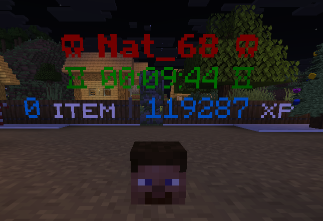
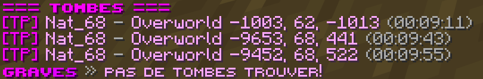

Un système de tombe est également présent pour sauvegarder vos items ainsi que votre expérience pendant 10 minutes après votre mort.
Même si vous tombez dans la lave, vos objets restent protégés dans votre tombe, vous laissant le temps de revenir les récupérer.
Il vous suffit simplement de retourner à l’endroit de votre mort pour tout récupérer, mais attention : le trajet devra se faire à pied (sauf si vous utilisez une carte Handic xD).
Ce système offre une sécurité supplémentaire et évite de perdre définitivement vos ressources les plus précieuses.

Lorsque vous êtes mort (dans le jeu bien sûr), une tombe apparaîtra automatiquement à l’endroit de votre décès.
Les coordonnées exactes de celle-ci vous seront immédiatement communiquées afin de vous permettre de la retrouver plus facilement.
Il vous suffira alors de vous rendre à ces coordonnées pour récupérer l’ensemble de vos objets et votre expérience avant la fin du délai imparti.
Et pour finir, vous pouvez interagir directement avec votre tombe :
Un simple clic droit vous permet de récupérer vos objets progressivement, un par un.
Si vous souhaitez tout reprendre immédiatement, utilisez Shift + clic droit afin de récupérer l’intégralité de vos items d’un seul coup.
Il existe également une commande pour vous aider à gérer votre ou vos tombes : /graves list.
Cette commande vous indique si vous avez actuellement une ou plusieurs tombes actives, mais aussi le temps restant avant leur disparition, vous permettant ainsi d’agir rapidement si nécessaire.
